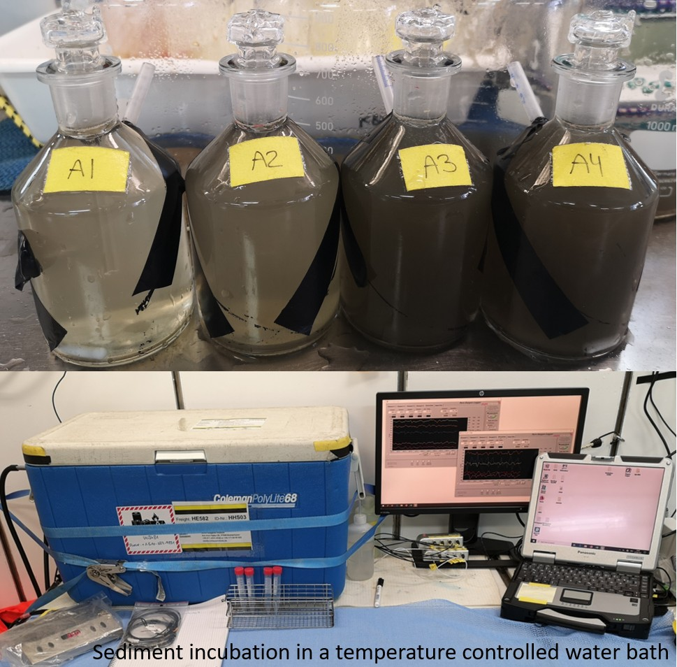
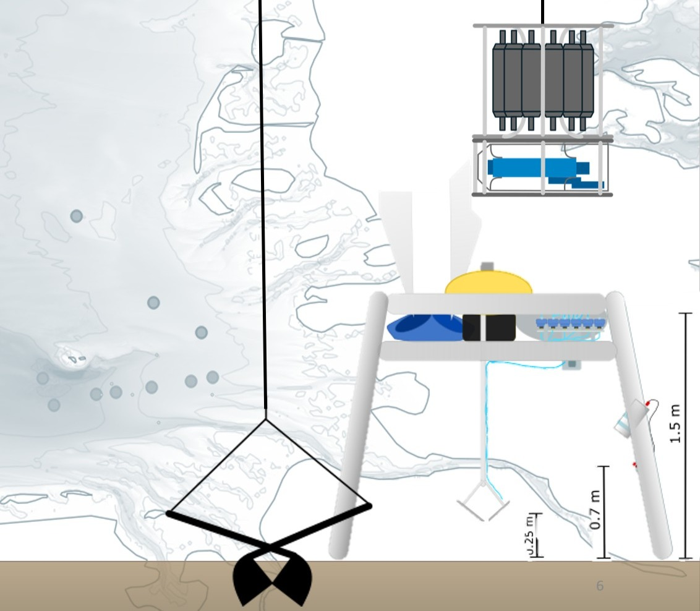
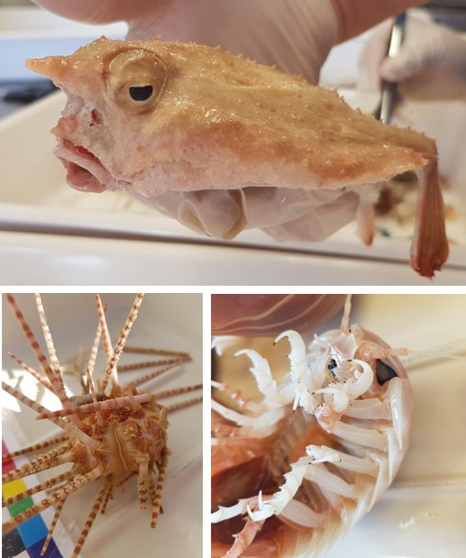
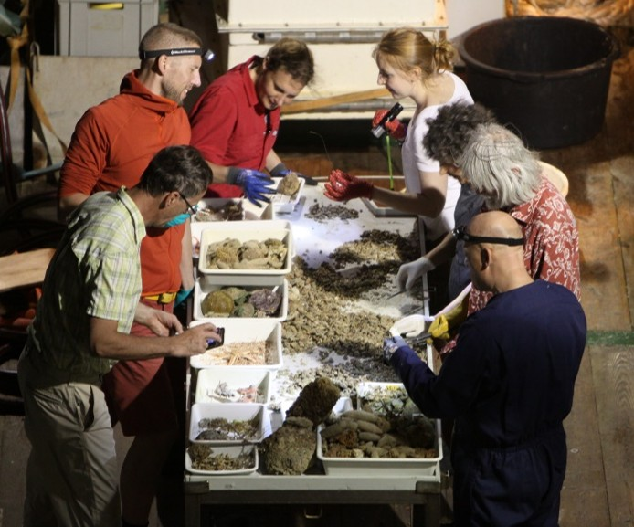
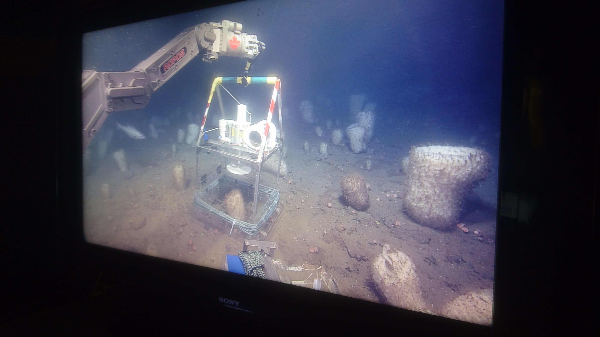
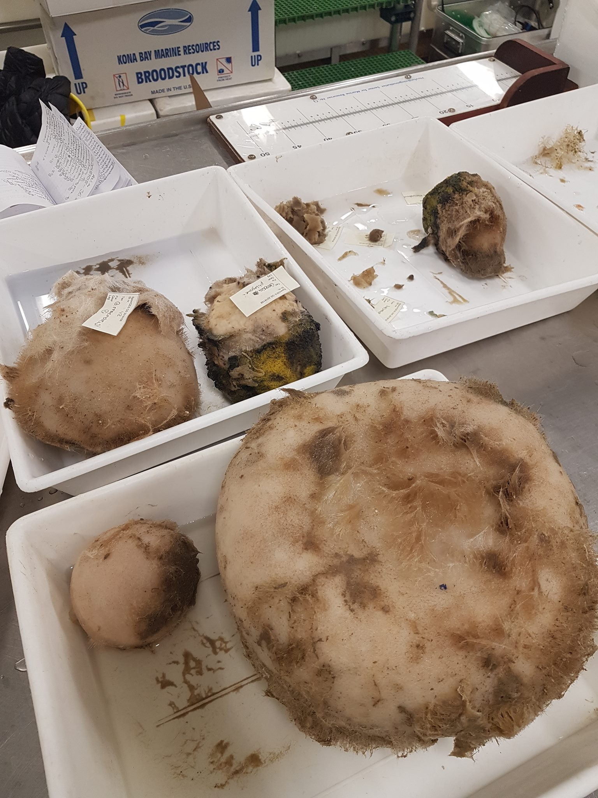
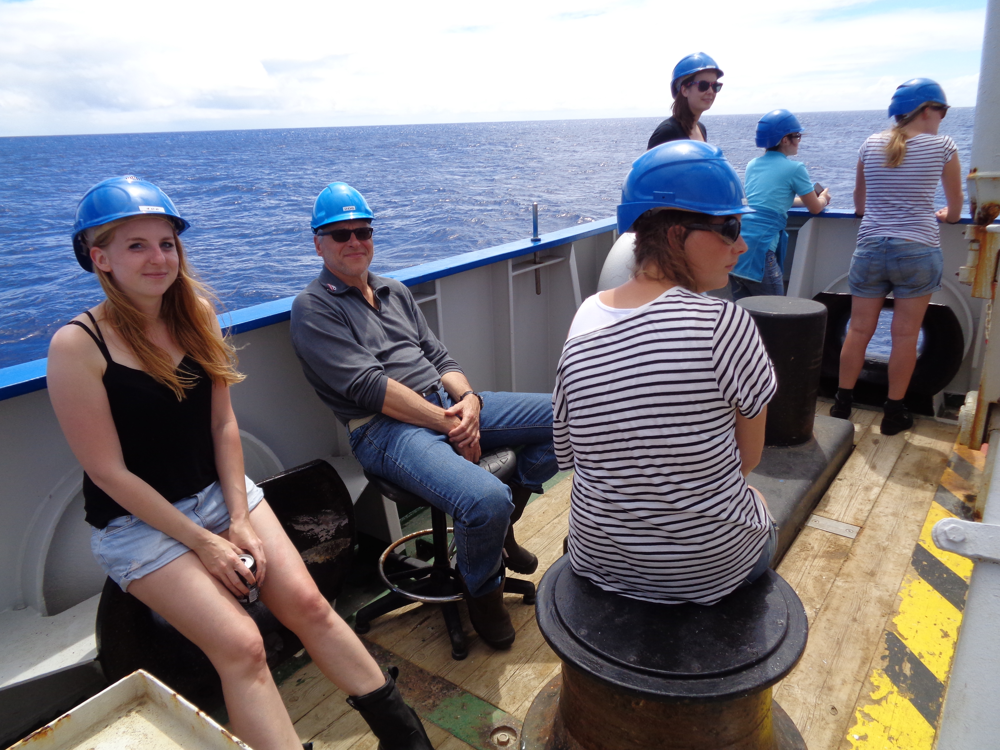

Expeditions
Field campaigns, cruises, polar trips, and deployments (chronological order).
October to December 2025 • Ross Sea Antarctica • Scott Base


March 2022 • North Sea • RV Heincke



Aug 2021 • North Sea • RV Heincke



Feb 2019 • Saba Bank, Caribbean • RV Pelagia - 64PE432
The Saba bank is known for its rich and diverse reefs between 30 to 50 m, but also the unexplored deeper areas harbor abundant benthic communities. In this study we investigated for the first time the deep flanks of the Saba bank from 100-1500 m. CTD and video transects were performed on the S and NW flanks of the seamount in order to measure physical water properties and to record the benthic faunal distribution. Additionally a lander was deployed for 24-36 h on each flank to record the diurnal variability of environmental factors, including a video trap, which was able to film larger predators.




June 2018 • Canadian shelf • CCGS Hudson



July 2018 • Norwegian & Barents Sea • RV G.O. Sars


Aug 2017 • Canadian shelf • CCGS Martha L. Black


June to July 2017 • Norwegian & Barents Sea • RV G.O. Sars
During this expedition we visited sponge grounds on the Schultz massif (73°48'49.7"N 7°26'13.9"E) and the Western Barents Sea (71°35'11.0"N 21°22'13.4"E).To determine water column structure and physical properties of the different water masses CTD measurements were carried out at all major study sites (Sogne Fjord, Sula reef, Schultz Massif and Barents Sea). Main aim was to define the main characteristics of the water masses around sponge grounds. Water samples were collected with a rosette system from different water depths including samples for DIC, nutrients, particulate organic matter (POM), microbiology and at selected stations for metabolomes. To monitor near-bed environmental conditions in the vicinity of the sponge ground a NIOZ designed ALBEX lander was deployed at the different study sites for periods of around 36 hours. Additionally deep-sea benthic community and sponge were incubated with in-situ incubation chambers to asses respiration as well as the removal of dissolved organic carbon (DOC), viruses, bacteria, inorganic nutrients and phytoplankton from the water column.



June 2016 • Azores • RV Pelagia



May 2016 • North Sea • RV Pelagia - 64PE412
During the Treasure cruise we investigated ...Ten days of high-resolution moored observations have been made near the crest of an elongated seamount bounding the axial graben of the Mid-Atlantic Ridge 400 km southwest of the Azores, which were compared to the occurence of benthic fauna, which was recorded during video transects over the seamount. see van Haren, Hanz et al. 2017
August to October 2015 • Arctic Ocean • RV Polarstern
Expedition PS94 went from Tromso up to the North Pole through the Arctic Ocean. The expedition was part of the Geotraces Transarc II project. The expedition PS94 Trans-Arctic survey of the Arctic Ocean in transition ("TransArc II") aimed at capturing the physical, biological, and chemical changes of the Arctic Ocean. During PS94 we determined patterns of benthic ecosystem functioning by assessing benthic boundary fluxes among different temporal and spatial gradients. This was realized with the help of shipboard microcosm incubations, as well as additional porewater oxygen microprofiles and sediment samples taken for DNA, total organic carbon (TOC), chlorophyll, prokaryotic cell numbers (AODC) and enzymes. Additionally we tried to investigate the impact of benthic biodiversity and abundance on re-mineralization rate, by determining species counts and abundance of the communities we observed. Conclusive, the goal was the quantification of benthic ecosystem functioning under different resource and diversity patterns, while additionally comparing seasonal characteristics (in the Barents Sea), annual differences (central Arctic 2015 vs 2011/12 vs 1993), different sea-ice cover regimes and varying spatial gradients, namely shelf seas, slopes, mid oceanic ridges and deep sea basins. We thereby hope to assess possible impacts of steadily changing environmental conditions on arctic benthic ecosystems.


Oct 2012 • Kattegat • RV Alkor - AL
The expedition went into the Kattegat and Skagerak to take fauna samples at 9 historical stations along a N-S transect with a van veen grab.